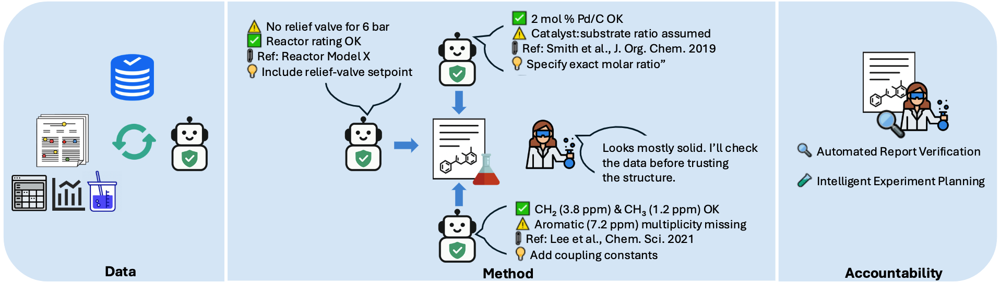

FactSci: Factual Scientific AI
Enhancing Factual Accuracy and Reasoning in Scientific AI
Project Summary
FactSci is a research initiative aimed at developing trustworthy scientific assistants based on large language models (LLMs).
The project focuses on enhancing factual accuracy, reasoning transparency, and multimodal understanding in scientific domains such as chemistry.
It integrates self-adaptive knowledge ingestion, multi-source retrieval, hierarchical fact-checking, and expert-guided training to support interpretable and verifiable scientific outputs.
Project Overview
The diagram below summarises the overview of the FactSci framework.

Figure: Overview of the FactSci architecture combining dynamic knowledge ingestion, retrieval-augmented generation, multi-checker verification, and expert-guided feedback.
Selected Publications
-
ATLAS: Agent Tuning via Learning Critical Steps
ACL 2025 Findings
-
RuAG: Learned-rule-augmented Generation for Large Language Models
ICLR 2025
-
Policy Learning from Tutorial Books via Understanding, Rehearsing and Introspecting
NeurIPS 2024
-
LLMs Assist NLP Researchers: Critique Paper (Meta-)Reviewing
EMNLP 2024
-
Revisiting Catastrophic Forgetting in Large Language Model Tuning
EMNLP 2024 Findings
-
MedINST: Meta Dataset of Biomedical Instructions
EMNLP 2024 Findings
-
Enhancing Temporal Sensitivity and Reasoning for Time-Sensitive Question Answering
EMNLP 2024 Findings
-
RetrievalQA: Assessing Adaptive Retrieval-Augmented Generation for Short-form Open-Domain Question Answering
ACL 2024 Findings
-
Large Language Models Are Neurosymbolic Reasoners
AAAI 2024
-
How Do Large Language Models Capture the Ever-changing World Knowledge? A Review of Recent Advances
EMNLP 2023
-
Enhancing Conversational Search: Large Language Model-Aided Informative Query Rewriting
EMNLP 2023 Findings
-
CITB: A Benchmark for Continual Instruction Tuning
EMNLP 2023 Findings
-
Interpretable Reward Redistribution in Reinforcement Learning: A Causal Approach
NeurIPS 2023
-
A Survey for Efficient Open Domain Question Answering
ACL 2023
Collaborations Welcome
We welcome collaboration with researchers, industry partners, and open-source contributors interested in scientific reasoning, large language models, fact-checking, or multimodal AI.
If you have shared interests or ideas aligned with the FactSci project, feel free to reach out via email.